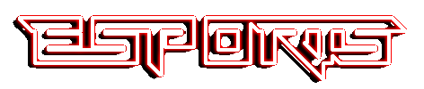

| NAME | DESCRIPTION | LOCATION | YEAR |
| Apex | Super Smash Bros. tournament with side events for Pokemon, fighting games, etc | United States | 2009-present |
| Battle.net World Championship Series (BlizzCon) | StarCraft II (SC2), World of Warcraft (WoW), Overwatch and Hearthstone: Heroes of Warcraft world championship series run by Blizzard Entertainment | Worldwide | 2012-present |
| Call of Duty World League | A Call of Duty esports league that began in January 2016.[1] It is played on Call of Duty: Black Ops III for PlayStation 4 and acts as a qualifier for the pre-existing, annual Call of Duty Championship. There are two divisions of play, a Professional division and an Amateur division. | Australia, Canada, Europe, Mexico, New Zealand, United States and other North American countries | 2016-present |
| Call of Duty World League | A Call of Duty esports league that began in January 2016.[1] It is played on Call of Duty: Black Ops III for PlayStation 4 and acts as a qualifier for the pre-existing, annual Call of Duty Championship. There are two divisions of play, a Professional division and an Amateur division. | Australia, Canada, Europe, Mexico, New Zealand, United States and other North American countries | 2016-present |
| Capcom Cup | Street Fighter tournament sponsored by Capcom | United States | 2013-present |
| 2013-present | Dota 2 and CS:GO competition across several cities in India. The prize pool for the 2018 edition is ₹1,00,00,000 | India | 2018-present |
| Code Wars | Inter-school technology event organized by Code Warriors, includes gaming event which features many games including FIFA. | India | 1997-present |
| CompeteLeague | An amateur esports leagues circuit and broadcast provider since January 2016. Currently operates the largest amateur League of Legends circuit on European and North American servers | Canada, Europe, Mexico, United States and other North American countries | 2016-present |
| Cybergamer | The premier esports leagues for the Oceania region. | Australia, New Zealand and other Oceanic countries | 2007-present |
| Dew Arena | The world's largest computer festival, the event includes major esports competitions. | Sweden | 1994-present |
| Dragon Ball FighterZ World Tour | The Dragon Ball FighterZ World Tour is a global tournament series for the smash-hit fighting game by Bandai Namco Entertainment, Inc | Worldwide | 2018-present |
| eGames | Tournament between countries. | Worldwide | 2016-present |
| Electronic Sports League | Worldwide | 2000-present | |
| Electronic Sports World Cup | Worldwide | 2003-present | |
| European Gaming League | A competition that focuses on the United Kingdom and Europe | United Kingdom | 2007-present |
| Evolution Championship Series | The largest fighting games competition in the United States, the tournament is very important for competition in the genre. | United States | 1996-present |
| Exun | Inter-school technology event organized by Exun Clan; considered most prestigious Indian school tournament after Code Wars. Gaming event includes FIFA. | India | 1992-present |
| FIFA Interactive World Cup | The FIFA Interactive World Cup (FIWC) is an annual video gaming competition officially organized by FIFA and its presenting partner EA Sports. | Worldwide | 2004-present |
| GameBattles UK | GameBattles UK is a British esports League with daily competitions for major console games played in the UK is famous for its high value cash tournaments | Great Britain | 2017-Present |
| Global Starcraft II League | Originally holding exclusive rights to broadcast Starcraft II in South Korea, the tournament has remained central to the Starcraft II competitions | South Korea | 2010-present |
| Halo Championship Series | 343 industries own esports league for the Halo series. The prize pool for the 2016 series is currently 2 million | Worldwide | 2014-present |
| Hero Pro League | Organised by Hero Entertainment and a flagship tournament for Crisis Action and King of Warship. Played mostly in China and South-East Asia. | Worldwide | |
| IMBA esports | IMBA esports is an upcoming Australian esports League, designed to foster talest and grow the esports community in Australia. Currently, the site contains a survey to gather responses so that the site can be best designed for the demands of the community | Australia | 2017-present |
| The International | The premier Dota 2 tournament, held annually. Due to the popular crowdfunding system set up for it, it has broken records for the largest esports prize pool every year of its existence | Worldwide | 2011-present |
| International e-Sports Federation | IeSF runs the only World Championships for official national teams.[2] | Worldwide | 2009-present |
| KO Fight Nights | This is an esports competition for the game title Streetfighter V with the finals held in New Delhi.[1] | India | 2018-present |
| League of Legends Champions Korea | The primary League of Legends competition in South Korea. | South Korea | |
| League of Legends India Champions Cup | An invitational tournament organized for the South Asian region.[3] | Bangladesh, India, Pakistan and Sri Lanka | 2018 - present |
| League of Legends Master Series | These league was separated from the Garena Premier League. | Hong Kong, Macau and Taiwan | 2015 - present |
| League of Legends Pro League | The top level League of Legends competition in China. | China | 2013 - present |
| LeagueGaming.com NHL | EA Sports NHL 18 EASHL Competitive Free and Money League. For Xbox and Playstation | Canada, Mexico, United States and other North American countries | 2003-Present |
| Major League Gaming | Among the largest competitions in the United States, the MLG has held competitions across the country featuring a variety of games. | United States | 2002-present |
| Military Gaming League | The only US military and veteran exclusive esport league. Competitions are held online, and across bases. | United States | 2018-present |
| Neo Geo World Tour | The Neo Geo World Tour is an official global tournament series supported by SNK, for popular fighting games including The King of Fighters XIV and The King of Fighters '98. There are also side tournaments and "Score Attack" challenges for classic Neo Geo titles like Metal Slug, Blazing Star, Fatal Fury Special, etc. | Worldwide | 2018-present |
| NGL Summer Tournament | This is a Bangladeshi esports tournament organized by the National Gaming League for the game League of Legends. | Bangladesh | 2018-present |
| NGS Championship (previously Indian esports Championship) | One of the most prestigious gaming events in India, the NSG Championship features CS:GO, Dota 2, Paladins, Rocket League and FIFA. The prize pool for the 2018 edition is ₹50,00,000 | India | 2016-present> |
| North East Championship | This is a month long-tournament with game titles including Clash Royale, Dota 2 and FIFA. The aim of the tournament is to promote esports in the Northeastern region of India which has been underrepresented in the Indian esports space.[1] | India | 2018-present |
| Overwatch League | Premier professional esports league for Overwatch. Competition and team structure mimics North American sports league with city-based teams and regular season play | United States | 2017-present |
| SEA Tour (previously Garena Premier League) | A League of Legends competition held in Southeast Asia. | Indonesia, Malaysia, Philippines, Singapore and Thailand | 2015-present |
| SMITE World Championship | The flagship tournament for SMITE, a third-person MOBA developed by Hi-Rez Studios. The tournament (currently) involves 14 teams from 6 regions and US $1 million in prize money. | United States | 2014-present |
| Taiwan Excellence Gaming Cup | The Taiwan Excellence Cup has been one of the most consistent esports tournaments in India and features the games Dota 2 and CS:GO.[1] | India | 2013-present |
| U Cypher | Indian esports competition for Dota 2, CS:GO, Tekken and Real Cricket. The prize pool in the first edition was ₹51,00,000 | India | 2017-present |
| 2017-present | UMG Gaming has been holding gaming events mainly for the Call of Duty franchise since 2012, it has become a staple event for teams and events are considered major events where all professional teams compete. | United States | 2012-present |
| Wargaming.net League | Tournament flagships from World of Tanks. | Worldwide | 2013-present |
| Esl India premiership | First Indian esports event with pool of 7000$ took place in Mumbai, India | India | 2015-present |